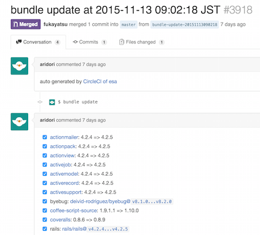
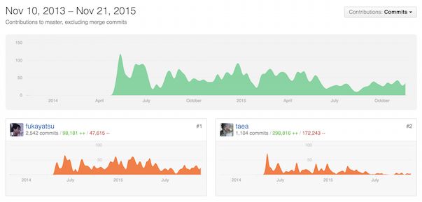
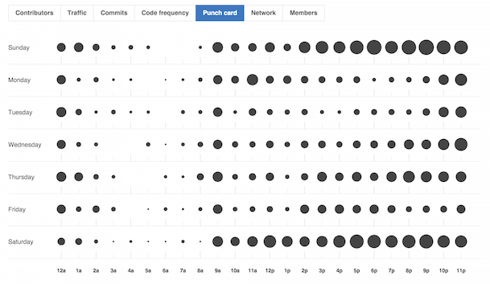

esa.io の作り方
はじめに
こんにちは。fukayatsu と申します。
合同会社 esa のエンジニア的な方です。 先日とある meetup で「るびまで esa の裏側の話を書いてみませんか？」とお誘いを頂きましたので、ありがたく書かせていただきます(\( ⁰⊖⁰)/)
esa.io は「情報を育てる」という視点で作られた、 自律的なチームのためのドキュメント共有サービスです。誤解を恐れずに言えば、「Markdown で書ける社内 Wiki もしくは blog」のようなものです。
この記事では以下の項目について説明していきたいと思います。 しばしお付き合い下さい。
- esa.io の開発
- 運用
- カスタマーサクセス
- マーケティング
- 合同会社 esa
- モチベーション
- 新しい esa の使い方？
- おわりに/esa のこれから
esa.io の開発
1 週間のうち、感覚的に 50%ぐらいの時間を esa.io の開発に充てています。
フレームワーク
執筆時点で、esa は Ruby 2.2.3 と Rails 4.2.5 で動作してます。 また後述しますが、毎日 Bundle Update を半自動的に行うことによって、ほかの依存ライブラリもできるだけ最新のものを使うようにしています。
開発の流れ
まず、開発したい機能やユーザーからのフィードバックは GitHub の Issues に登録されます。
次に作業する Issue を選び、 GitHub Flow (Japanese translation) にしたがってブランチを作り、適宜 push しながら実装を行います。
push 毎に CI を行い、テストのカバレッジが 90% を下回っていた場合にはテストが失敗したとみなされます。テストがすべて成功している場合のみ master branch にマージすることができます。
機能が出来上がったら、master branch にマージします。これを hook にして、サービスの本番デプロイが行われます。
その後、リリースノートを公開し、それをツイートするところまでが一つのリリースのサイクルとなります。
ドックフーディング
もともと esa を開発するモチベーションの一つが pplog (ゆるふわインターネットにポエムを刻もう) 界隈の友人達の間で日報を書くためだったのですが、いまでもそのチームで日報を書き合っています。みな会社は別々なので込み入ったことは書かないのですが、引っ越し報告や最近考えていることを知れるので楽しいです。
僕は週 2 回業務委託でほかの会社を手伝っているのですが、そこでも esa を使っていただいています。ここでは、設計・日報・会議のアジェンダ・デザイン案などの記事が多いです。
esa 社の運営用のチームもあります。その時々で感じたことや週 1 回行う振り返り(KPT)の場として使用しています。
さらに個人的には、自分の家族用のチームも作っています。 書くのは主に僕と母ですが、帰省の連絡や近況報告に使っています。
と、こんな感じで、気付けば毎日 esa を使いつつ作るという状況になっていました。
スケジュール・ノルマ
スケジュールはできるだけ決めないようにしています。ノルマも特にありません。 これは、締め切りによる心理的負担を減らすためです。 その時に作りたいものを作るのが効率的で、最終的に皆が幸せになれると信じているからでもあります。
締め切りがなければ、よい解決策を思いつくまで判断を遅らせるという判断ができます。 もちろん、常に判断を先送りするのが正解とは限りません。
bundle update の自動化
masutaka/circleci-bundle-update-pr を使って毎朝 bundle update をして使用しているライブラリを最新に保つようにしています。
SaaS では、Tachikoma.io や deppbot 等があります。 
Staging 環境
話をするとよく驚かれるポイントですが、esa には Staging 環境が存在しません。 必要があれば用意するつもりだったのですが、無くてもなんとかなったというのが正確なところかもしれません。
多少確認が必要な機能であれば、開発者限定でリリースをしたりします。 これは、本物のデータで確認ができるという利点もあります。
あの機能の裏側
いくつかの特徴的な機能・気に入っている機能について説明します。
WIP
esa では、記事に「WIP」と「ShipIt」の 2 つの状態をもたせています。 この機能は esa の開発が始まって比較的初期に追加されました。
この状態に応じて、画面上のデザイン・通知の ON/OFF・public team での記事の公開/非公開が切り替わるなど、esa の様々な機能と深く結びついています。
詳しくは、esa LLC のデザイナーの ken_c_lo 氏のスライドを御覧ください
記事の外部公開機能
release_note/2015/01/13/記事(スライド)の外部公開 - docs.esa.io
この機能は、任意の記事をチーム外に公開する機能です。 markdown を静的ファイルとして出力して Amazon S3 に配置することで、 たくさんのアクセスがあった場合でも esa 本体のサーバーには負荷がかかりません。
また、markdown を通常表示用の html と同時にスライドショー用にも変換しています。これによって、esa 上で手軽にスライドを作り、公開することが可能になりました。
3 way merge
複数のユーザーが同時に記事を編集してしまった際に、どうするかは esa を作り始めてからしばらくの間の悩みでした。
一般的には、編集がかち合ってしまった場合は、
- 先に編集した方の勝ち。後から編集した方はエラーになる
- 後に編集した方の勝ち。記事は常に最後に更新した内容になる
という戦略があります。
どちらにしろ、うまく記事が更新できなかった場合は残念な気持ちになりますね。
この問題は、
release_note/2014/12/23/記事保存時の自動マージ - docs.esa.io
のリリースによって、同時に編集した場合は 3 way merge されることで、 この問題をある程度解決しました。
仕組みとしては単純で、記事の保存時に
- 記事編集開始時点のリビジョン
- 最新の記事のリビジョン
- 現在の記事の編集内容
を比較してマージを行います。
たまにコンフリクトする場合もあるのですが、現状、同時編集を行う esa のユーザーは技術者が多いのでだいたいなんとかなっているようです。
カテゴリ機能
カテゴリ機能は某社で使われているという __groupad (blog + wiki)__の噂を聞いて作りました。「タイトルをスラッシュで区切るとカテゴリになるらしい」ぐらいのアバウトな認識でした。
後に WEB+DB PRESS Vol.77 ｜技術評論社 で関連記事が掲載されていることを知ったり、MediaWiki などでもそういう仕組みがあるということを知りました。
カテゴリ機能が root ページあることで、root ページにタイムラインを置くより情報発信の敷居が下がると我々は考えています。
ちなみに、カテゴリ機能は Vue.js を使って作られています。
決済
WebPay: 開発者向けクレジットカード決済サービスを使っています。以前別の仕事に使っていた決済サービスに比べると格段に使いやすいです。
テンプレート
テンプレート機能は記事機能を流用しています。
templates/日報/%{Year}/%{month}/%{day}/%{me}:title という記事を作っておくと、 日報/2015/11/21/fukayatsu:title という記事のテンプレートになります。
この機能は気に入っているアプローチの一つです。 記事とは別にテンプレートの登録や更新ページを作ることもできたのですが、 カテゴリがあったおかげで無駄に新しい機能を作らずにすみました。
記事のコピー機能
help/記事の書き方(前の記事をコピーして書く) - docs.esa.io
この機能は比較的初期に日報を楽に書くために作りました。 前日の日報をコピーして、今日の日報の雛形にすることができます。 タイトルの日付が自動的にその日のものに更新されるので非常に便利です。
開発ペース
GitHub のグラフ

2015 年の 2 月まで僕はフルタイムで esa とは別の仕事をしていたのですが、それ以前よりそれ以降の方が commit 数で見ると少ないようです。 
土曜と日曜が特に活発ですね。次点で木曜日がわりと開発が活発なのが興味深いです。
リリースノート

リリースノートは 2014 年 11 月に書き始めたので、だいたい 1 年で 100 回ぐらいはリリースノートを書いていたようです。週に 1,2 本のペースですね。
運用
使っているサービスはだいたいこちらにまとめています。
[[esa’s Tech Stack StackShare http://stackshare.io/esa/esa]]
Heroku
Web サーバは Heroku の US リージョンの 2X dyno を 2~5 の範囲で使っています。 平日の日中に特にアクセスがあり、それ以外時間帯はピーク時の 20~30%程度に落ち着きます。それに合わせて Heroku Scheduler を使ってキャパシティをスケジューリングしています。
障害監視
Pingdom と PagerDuty を使って esa がサービスダウンした場合は 電話が掛かってくるようにしています。
また、 esa.io Status も近日リリース予定です。
リリースノート
リリースノートも esa 上で運営しています。これはドックフーディングの機会でもあります。リリースノートは webhook で受け取ることができるようになっているので、チームによっては Slack 等に直接リリースノートが届きます。
これも好きなアプローチの一つです。なぜなら、リリースノートをメールにしてユーザーに送信するのは面倒ですし、そのようなメールを好まないユーザーもいるからです。
カスタマーサクセス
ユーザーと我々が幸せになることをなんでも
この、両者がともに幸せになる、ということを重視しています。 我々だけが幸せになってもユーザーにとって不幸であれば、ユーザーは離れていき、結果我々も不幸になります。逆にユーザーだけが幸せであり、我々が不幸であれば、サービスを長く続けることは困難でしょう。
当たり前のことだと思われるかもしれませんが、大切なことです。 そして、両者が幸せになる、ということに集中できていれば、手段に囚われるということが少なくなるという気がしているのです。
5 分で返信する
ユーザーからのフィードバックには できるだけすばやく 対応することを心がけています。
丁寧な言葉遣いはある程度犠牲にします。
質問に対して、「はい/いいえ」よりも良い返事がある
たとえば、「◯◯機能はありますか？」というようなフィードバックを頂くことがあります。
単純に、「はい」「いいえ」で答える前に、
- ユーザーの問題はなんだろうか
- それを現状の機能で解決できるだろうか
- 他に応急処置的な策はあるか
ということを考え、分からなかったり気になったことは逆に質問します。 こうして理解したことをサービスに反映することで、フィードバックをくれたユーザーだけでなく、他のユーザーにも価値を届けることができるようになります。
バグ修正や簡単で効果的な機能追加はその場で実装してすぐにリリースする
開発者が直接ユーザーサポートをするので、サポート中はある意味一番モチベーションが高い状態であったりします。このチャンスを逃す手はありません。一気にコードに反映させてリリースすることで、ユーザーにもよい影響を与えますし、自分たちも効率よく対応することができます。
逆にこのモチベーションの使い方を誤ると微妙な無駄機能を作ってしまったりすることもありそうなので注意したいです。
いろいろなチャンネルを使う
Feedback form であったり、Tweet であったり、メールであったり、直接の会話であったり、皆様々な方法でフィードバックをくれます。我々の場合、最終的には GitHub Issue に登録されますが、間口は意識的に広くとっています。
特に Twitter は、esa や esa.io 、#esa_io などのキーワードを定期的に確認してサービスに関する感想や不満点、提案などを拾っています。
マーケティング
ここでは、マーケティングの指針や、実際にどういったマーケティングを行っているか説明します。
イベントでプレゼンをする
特に技術系のイベントでの登壇を少しずつ増やしています。 参加者層がユーザー層と近いのと、単純にそういうイベントに参加するのが楽しいからです。
[[diary/2015/08/21/YAPC::Asia 2015 で esa について発表してきました #yapcasia #yapcasiaA - docs.esa.io https://docs.esa.io/posts/134]]
技術系のイベント・コミュニティのスポンサーをする
[[東京 Node 学園祭 2015 http://nodefest.jp/2015/]] [[RubyKaigi 2015 http://rubykaigi.org/2015]]
お金を提供する代わりに運営チーム向けに esa の 1 チームを提供するという試みを始めました。このようなカンファレンスの運営チームには、Wiki 等のツールに長けた方々が多く、有用なフィードバックをたくさん頂いています。
Web 広告を出さない
絶対に出さないと決めているわけではありませんが、我々があまり Web 広告を好きではないこともあって今のところ Web 広告は出していません。
広告を出すにしても、もう少し面白い形で何かできたらいいなぁと企んでいます。
競合と仲良くする
先日、JohoKaigi - 情報会議という試みが始まりました。 情報共有ツールを作っている人たちや、使っている人たちが集まって情報共有をするというメタい集まりです。
情報共有ツールを作っている側としては、市場自体がもっと認知されて広がっていくことに繋がると思っており、できる範囲で協力していきたいと考えています。
Twitter で遊ぶ
[[esa_io (@esa_io) ｜ Twitter https://twitter.com/esa_io]]
では、(\( ⁰⊖⁰)/)が適当なことを半角カナでつぶやいたり、リリースノートをお知らせしたり、エゴサーチを元にユーザーサポートを行ったりしています。
また、作業時の気分転換という意味合いもあります。
合同会社 esa
会社のページはこちら: esa LLC( ⁰⊖⁰)
我々はスタートアップ企業ではありません
出資を受けておらず、急激な成長を目的としてはいません。 どちらかと言うと、中小企業といった方がしっくりくるような気がします。
esa と作る我々と、esa と、esa を使う人々が堅実に成長していくことを目指しています。
人を増やさない
たくさんのクラウドサービスのおかげで、少人数でサービスの開発・運営を行えるようになりました。
一般に、人を増やすということは、リソースの増加や新しい文化の導入と引き換えに幾つかのコストを支払うことになります。人件費・コミュニケーションコスト・マネージメントのコストなどです。
人を増やさないという選択は、これらのコストと無縁でいられるという利点があります。
将来的にはわかりませんが、しばらくは最小限の人数でサービスを作っていくつもりです。
出資を受けない
我々は出資を受ける代わりに 1 週間に 2 日ほど業務委託で他の会社を手伝ったりしています。
この手伝っている会社でも esa を導入してもらっていることが多く、ドックフーディングの機会となっています。
また、僕自身としては、普段はエンジニア 1 人なので、チーム開発の勘を維持する貴重な機会となっています。
出資を受けないことで、我々は自由でいられます。
仕事場(オフィス)
もともと我々は決まったオフィスがありませんでしたが、昨年 11 月に登記する際に、他の会社と共同で 1 部屋借りました。通称 “部室” です。
https://theta360.com/s/2y7HuANhombwbY4Jo3apsMHsS
部屋の照明やエアコン等を Chat から操作できるようにしたり、RaspberryPi で定点観測したりといろいろ遊んでいます。
興味がある方は、
ゆるふわ Development Club #yurudev
の meetup へのご参加をお待ちしております。
経済状況
今年の元旦に正式版のリリースと同時に有料化してから、現在 200 を超えるチームが有料で使ってくださっています。これらのチームのメンバーの合計は 11/21 現在で、約 1,700 人となっています。だいたい 200~250 人ずつ増えていますので、来年中には esa の収益だけで会社を経営できるのではないかと考えています。
「esa の収益だけで会社を経営できる」というのが esa の開発を始めた頃からの一つの目標でしたし、これを達成することで次にどう進むかを正しく判断できるようになるのではないかと考えています。
「空腹で恋愛をするな」という歌がありますが、そんな感じですね。
モチベーション
もともと esa は趣味から始まりました。 会社になった今でもモチベーションはとても大切にしています。
フィードバックをもらう
どんなに厳しい意見でも、自分のサービスについて言及していただけるのはありがたいと感じます。尊敬する人に「クレームは宝だ」という言葉を教えて頂きましたが、まさにそうだと思います。
厳しい意見でさえそうなので、「esa よい」「つかいやすい」「(\( ⁰⊖⁰)/)かわいい」「ステッカー欲しい」みたいな意見は本当に嬉しいです。
リリースノート書きたい
手前味噌なのですが、esa でリリースノートを書くのは本当に楽で楽しくて、一時期リリースノート書きたさのために機能を実装しているような状態になり注意されるということがありました。
(\( ⁰⊖⁰)/)グッズを沢山つくる
[[help/esa.io グッズ SHOP - docs.esa.io https://docs.esa.io/posts/16]]
自分たちのモチベーションを上げるためにグッズをたくさん作っています。 たまに、何かの間違いで esa グッズの売上だけで生活できるようにならないかなと考えたりします。
やりたい時にやりたい事をやる
これが一番重要かもしれません。 esa の開発が土日・平日を問わず不規則に行われているのも、無理なく楽しく実行しようとした結果です。
新しい esa の使い方？
最近個人や家族で esa を使うというお話をよく聞きます。 調べてみると、有料で契約していただいているチームうち約 30% が個人チーム、約 10% が 2 人のチームでした。
当初は漠然と 10~30 人ぐらいのチームを想定していたのですが、個人や家族といったより少人数で使われたり、逆に多いほうだと 120 人を超えるチームで使われるケースもあります。
まだまだ我々が気付いていない使い方があると思いますので、何か面白い使い方を思いついた方はぜひご一報ください。
おわりに/esa のこれから
ユーザーと我々が幸せになることを目的として最善をつくていきたいとおもいます。当面の目標は「esa の収益だけで会社を経営できる」ことです。来年の春頃までに幾つか作ろう・改善しようと思っている機能はあるのですが、僕はプレッシャーに弱いのであえてここでは言いません。
それでは、今後とも esa をよろしくお願いいたします。